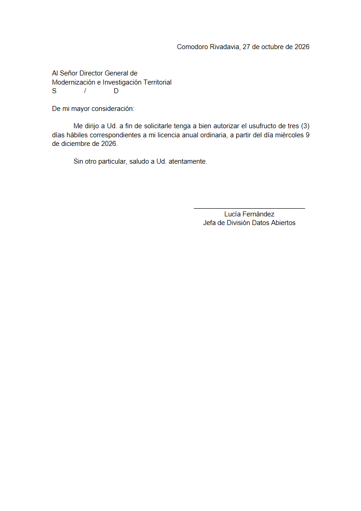
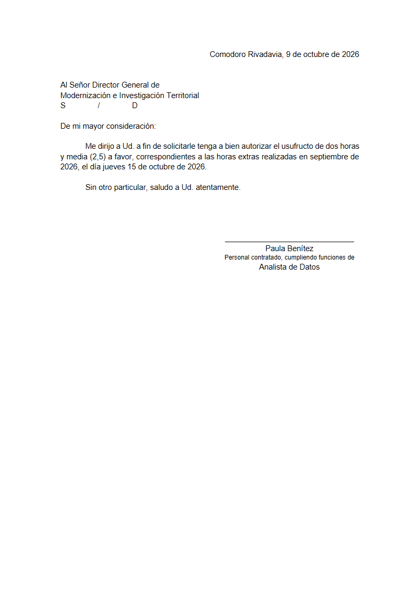

La nota de licencia en Word
Maqueta del 27/10/2026. Es la página real de Mi espacio, con los datos de una copia de la base con personas y licencias inventadas: no hay servidor y nada se guarda.
El segundo paso de «Cargar licencia»: tres versiones
Abrí una y probá: tocá «Cargar licencia», elegí un tipo (las fechas vienen puestas para el ejemplo) y «Guardar». También «Editar» en una fila y «Guardar», o «Word» en una fila. Abajo a la derecha se cambia de versión sin cerrar el modal.
- A. Resumen y la nota en chicoLa licencia guardada arriba y, debajo, la nota en miniatura con su botón «Descargar Word».
- B. CompactaUn recuadro verde con la licencia y una fila con el archivo y su botón. Lo más corto.
- C. La nota a la vistaLa nota entera, para leerla antes de bajarla; «Descargar Word» en el pie.
Así se ve el Word
Hoja A4 blanca, Arial 11, interlineado 1,15, márgenes de 2,5 cm arriba y abajo y 3 cm a los costados.

